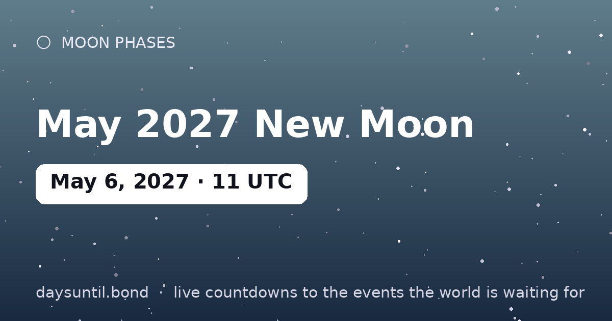

How Many Days Until May 2027 New Moon?
–days
–hours
–minutes
–seconds
May 2027 New Moon falls on Thursday, May 6, 2027.
📅 – weeks
💼 – weekdays
🛌 – weekend days
🗓️ – months (approx)

Quick facts
| Exact (UTC) | May 06, 2027 · 11:00 |
|---|---|
| Zodiac position | 15°42' Taurus |
| Moon phase | New Moon (0% illumination) |
| Best viewing | Moonless night — ideal for stars, meteors and the Milky Way |
About May 2027 New Moon
The May 2027 new moon falls at 11:00 UTC on May 06, 2027, at 15°42' Taurus. The Moon sits between Earth and Sun, so its dark side faces us: no Moon visible for about a day on either side.
A new moon in Taurus is the traditional planting moment of the month — the sky's blank page. Anything begun in the days around it shares the sign's flavor, and the intentions you set now come to full light at the Taurus full moon six months later.